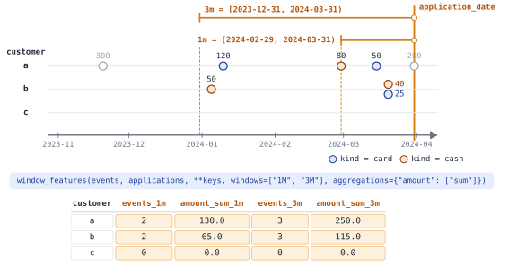
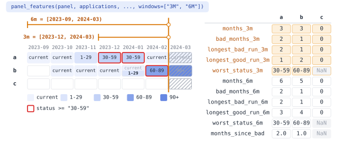
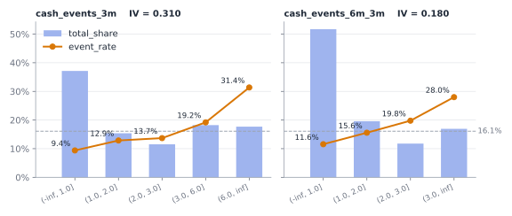

时间窗特征#
评分卡的行为类变量大多是对事件历史的汇总：最近三个月的交易笔数、一年内最大的一笔取现、距上次还款的天数。每个变量都针对一个主体（如客户）在一个观察时间（如申请日期）计算，只能使用当时已知的信息。手工筛选和分组事件的代码很容易混入之后发生的事件，为生产环境重写的代码也很少能给出相同的数。 window_features() 一次为大量观察计算这些变量，从不使用观察时间当时及之后的事件； panel_features() 对月度还款状态做同样的事，例如最近一年中逾期的月数； FeatureSpec 保存它们的定义，使生产环境以同样的方式计算。
时间窗特征是项目的第一步。 单变量概况 对照目标变量分析它们给出的特征， 分箱 对保留下来的特征分箱。
定义#
一个 观察 是一个主体 \(i\) 和一个时间 \(t\) ，长度为 \(k\) 个月的 窗口 是它之前的区间 \([t - k, t)\) 。一个特征对该主体时间 \(\tau_e\) 落在窗口内的事件 \(e\) ，聚合某一列的值 \(v_e\) ：
聚合可以是计数、求和、均值、极值或下文中的其他聚合。窗口截止于 \(t\) 之前，因此观察时间当时及之后的事件从不计入：这些特征是 时点正确 的（point in time）。窗口对，例如从 \(t\) 之前六个月到三个月，是区间 \([t - 6, t - 3)\) ，即最近一期之前的那一期。
月份按自然月计算，与 pandas.DateOffset(months=k) 的计法相同：5 月 31 日之前三个月是 2 月 28 日，闰年为 2 月 29 日，且保留一天中的时间。长度为 \(k\) 天的窗口从 \(t\) 之前 \(k\) 天开始。
计算示例#
两位客户有几笔刷卡消费和取现，三位客户在 2024 年 3 月 31 日申请贷款。客户 c 没有任何历史：
>>> import numpy as np
>>> import pandas as pd
>>> from kivi.features import FeatureSpec, window_features
>>> events = pd.DataFrame({
... "customer": ["a", "a", "a", "a", "a", "b", "b", "b"],
... "time": pd.to_datetime([
... "2023-11-20", "2024-01-10", "2024-02-29", "2024-03-15", "2024-03-31",
... "2024-01-05", "2024-03-20", "2024-03-20",
... ]),
... "amount": [300.0, 120.0, 80.0, 50.0, 200.0, 50.0, 40.0, 25.0],
... "kind": ["card", "card", "cash", "card", "card", "cash", "cash", "card"],
... })
>>> applications = pd.DataFrame({
... "customer": ["a", "b", "c"],
... "application_date": pd.to_datetime(["2024-03-31", "2024-03-31", "2024-03-31"]),
... })
>>> keys = {"id": "customer", "time": "time", "observation_time": "application_date"}
>>> window_features(
... events, applications, **keys,
... windows=["1M", "3M"], aggregations={"amount": ["sum"]},
... )
events_1m amount_sum_1m events_3m amount_sum_3m
0 2 130.0 3 250.0
1 2 65.0 3 115.0
2 0 0.0 0 0.0
3 月 31 日之前一个月从 2 月 29 日开始，因此对客户 a ，窗口 1m 包含当天 80 的取现和 3 月 15 日 50 的消费：两个事件，合计 130。3 月 31 日 200 的消费恰在申请日，不计入任何窗口。三个月的窗口从 2023 年 12 月 31 日开始，加上 1 月 10 日 120 的消费，而 11 月 300 的消费早于所有窗口。客户 c 没有事件，因此其计数和求和为 0；其均值或最大金额会是 NaN。
结果每个申请一行，使用 applications 的索引，因此可以用 pd.concat([applications, features], axis=1) 与申请样本拼在一起。

完整示例。每个窗口从申请日期之前一个或三个自然月开始，截止于申请日期之前。申请日期当天 200 的消费和 11 月 300 的消费画为空心，不计入任何窗口。#
窗口#
windows 以字符串列出窗口： "3M" 表示三个自然月， "90D" 表示 90 天。默认值为 ("3M", "6M", "12M") 。 ("3M", "1M") 这样的一对表示观察之前三个月到一个月之间的时期；两个边界的单位必须相同，且第一个更早。列名中的窗口用小写书写，例如 3m 、 90d 和 3m_1m ：
>>> window_features(
... events, applications, **keys,
... windows=["30D", ("3M", "1M")], aggregations={"amount": ["sum"]},
... )
events_30d amount_sum_30d events_3m_1m amount_sum_3m_1m
0 1 50.0 1 120.0
1 2 65.0 1 50.0
2 0 0.0 0 0.0
3 月 31 日之前三十天是 3 月 1 日，因此 2 月 29 日的取现在窗口 30d 之外，但在 1m 之内。窗口 3m_1m 截止于 1m 开始的地方，所以两者合起来就是窗口 3m 。
备注
一对边界只有作为窗口列表中的一项时才是一个窗口。 windows=[("3M", "1M")] 是窗口 3m_1m ，而 windows=("3M", "1M") 是 3m 和 1m 两个窗口：
>>> list(window_features(events, applications, **keys, windows=("3M", "1M")).columns)
['events_3m', 'events_1m']
默认每个窗口左闭右开，即 \([t - k, t)\) 。使用 closed="right" 时窗口改为 \((t - k, t]\) ，观察时间当时的事件计入，适用于在发生时即已可知的事件，例如日终余额。这样的事件在观察时间是否已经可知，由调用者判断，kivi 无法得知。这里 3 月 31 日的消费计入，而位于窗口下界 2 月 29 日的取现不计入：
>>> window_features(events, applications, **keys, windows=["1M"], closed="right")
events_1m
0 2
1 2
2 0
时间列必须是 datetime。两列可以都无时区，也可以处于同一时区。有时区时，边界按当地日历计算，事件按绝对时刻比较。落在春季时钟跳过的那一小时内的边界移到该小时结束时，落在秋季时钟重复的那一小时内的边界取其第一次出现。
聚合#
aggregations 把事件表的每一列映射到它的聚合。缺失值不参与所在列的聚合，而 events 列统计窗口内的每个事件：
聚合 |
取值 |
空窗口 |
|---|---|---|
|
值的个数 |
0 |
|
值的和 |
0 |
|
值的均值 |
NaN |
|
最小值与最大值 |
NaN |
|
样本标准差，与 |
NaN |
|
不同取值的个数 |
0 |
|
最早和最晚一个事件的值；同一时刻的多个事件按行序排列 |
NaN |
|
从最后一个事件到观察时间的天数，含不足一天的部分 |
NaN |
count 、 nunique 和 days_since_last 接受任何 dtype 的列，例如每个事件的类型；其余聚合需要数值，布尔值按 0 和 1 计，因此标志列的 sum 就是带该标志的事件数。计数为整数，其余列为浮点数。下表经过转置以适应页面宽度：
>>> features = window_features(
... events, applications, **keys,
... windows=["3M"],
... aggregations={
... "amount": ["mean", "min", "std", "first", "last", "days_since_last"],
... "kind": ["nunique"],
... },
... )
>>> features.T.round(2)
0 1 2
events_3m 3.00 3.00 0.0
amount_mean_3m 83.33 38.33 NaN
amount_min_3m 50.00 25.00 NaN
amount_std_3m 35.12 12.58 NaN
amount_first_3m 120.00 50.00 NaN
amount_last_3m 50.00 25.00 NaN
amount_days_since_last_3m 16.00 11.00 NaN
kind_nunique_3m 2.00 2.00 0.0
客户 b 在 3 月 20 日有两笔交易：40 的取现和 25 的消费； last 取消费，因为它在行序中靠后。两者都在申请日之前十一天。对窗口对， days_since_last 仍从观察时间算起。它是经过的时间，因此有时区时，它与 "90D" 这类窗口按当地日历计的天数可能相差时钟调整的那一小时。
比率与变化#
ratios 计算两个特征之比，按列名指定。分母为 0 时比率为 NaN。两个特征只有窗口不同时，比率命名为 {numerator}_over_{window} ，否则命名为 {numerator}_over_{denominator} 。最近一个月在最近三个月中的占比反映活动是否集中在近期，最近一个月与之前两个月之比衡量相邻两期之间的变化：
>>> window_features(
... events, applications, **keys,
... windows=["1M", "3M", ("3M", "1M")],
... aggregations={"amount": ["sum"]},
... ratios=[("amount_sum_1m", "amount_sum_3m"), ("amount_sum_1m", "amount_sum_3m_1m")],
... ).iloc[:, -2:].round(4)
amount_sum_1m_over_3m amount_sum_1m_over_3m_1m
0 0.5200 1.0833
1 0.5652 1.3000
2 NaN NaN
与去年同一季度相比的变化，是窗口 3M 与窗口对 ("15M", "12M") 之比，例如 ("amount_sum_3m", "amount_sum_15m_12m") 。差值不需要单独的选项：用 pandas 把两列相减即可。
筛选后的事件#
kivi 没有用于筛选事件的表达式。要只对部分事件计算特征，例如取现，先用 pandas 选出这些事件，再给它们的特征加上 prefix ：
>>> cash = events[events["kind"] == "cash"]
>>> window_features(
... cash, applications, **keys,
... windows=["3M"], aggregations={"amount": ["sum"]}, prefix="cash_",
... )
cash_events_3m cash_amount_sum_3m
0 1 80.0
1 2 90.0
2 0 0.0
前缀加在每一列前面，比率使用带前缀的列名。
多个时间点的观察#
一个主体可以在观察表中出现多次，例如每个月末一行以跟踪其特征随时间的变化，或者同一行出现两次。每一行得到其自身时间的特征：
>>> month_ends = pd.DataFrame({
... "customer": ["a", "a", "a"],
... "application_date": pd.to_datetime(["2024-01-31", "2024-02-29", "2024-03-31"]),
... })
>>> window_features(
... events, month_ends, **keys, windows=["3M"], aggregations={"amount": ["sum"]}
... )
events_3m amount_sum_3m
0 2 420.0
1 1 120.0
2 3 250.0
2 月 29 日之前三个月是 11 月 29 日，晚于 11 月 20 日的消费，因此这笔消费只在 1 月底计入。一次调用就能计算所有日期的特征，回溯历史样本就是这样做的。事件只排序一次，每个窗口的边界用二分查找确定，因此计数、和、均值、第一个和最后一个值以及 days_since_last 的耗时随两张表的行数增长。 min 、 max 、 std 和 nunique 则要查看每个窗口中的每个事件，因此其耗时随一个主体的观察日期数乘以每个窗口的事件数增长。
解读结果#
列 |
含义 |
类型与空窗口取值 |
|---|---|---|
|
窗口内的事件数，不论是否有值 |
整数，0 |
|
该列的值的个数，以及不同取值的个数 |
整数，0 |
|
值的和 |
浮点数，0 |
|
其余聚合 |
浮点数，NaN |
|
比率，排在最后 |
浮点数，分母为 0 时为 NaN |
各列先按窗口，再按 aggregations 中列的顺序，再按聚合排列，比率排在最后。列名和前缀保持原有的大小写：名称中只有 kivi 自己的部分，即聚合和窗口，用小写书写，因此 Amount 和 amount 的特征不会混在一起。NaN 表示窗口内没有可聚合的值，这本身就是信息：用 profile_table() 分析这些特征，查看它们缺失的频率以及区分两类的能力，再用 分箱 分箱，缺失值在那里自成一组。
还款行为#
月度还款状态面板，例如 delinquency_panel() 或 make_loan_panel() 的结果，给出每位借款人在其以往贷款上的还款行为。 panel_features() 对观察时间所在月之前的每个按月的窗口，统计有状态的月数、坏月数、连续坏月和连续好月的最长月数以及最差状态，另给出距最近一个坏月的月数。按状态列类别的顺序，从 bad （默认 "30-59" ）开始的状态都算坏，因此状态列必须是有序分类。
客户 a 在 12 月和 1 月逾期达到 30 天，客户 b 在 1 月有两笔贷款，一笔正常，一笔逾期：
>>> from kivi.features import panel_features
>>> panel = pd.DataFrame({
... "customer": ["a"] * 7 + ["b"] * 7,
... "month": pd.PeriodIndex(
... ["2023-09", "2023-10", "2023-11", "2023-12", "2024-01", "2024-02", "2024-03"]
... + ["2023-10", "2023-11", "2023-12", "2024-01", "2024-01", "2024-02", "2024-03"],
... freq="M",
... ),
... "status": pd.Categorical(
... ["current", "current", "1-29", "30-59", "30-59", "current", "current"]
... + ["current", "current", "current", "current", "1-29", "60-89", "90+"],
... categories=["current", "1-29", "30-59", "60-89", "90+"],
... ordered=True,
... ),
... })
>>> behaviour = panel_features(
... panel, applications, id="customer", month="month", status="status",
... observation_time="application_date", windows=["3M", "6M"],
... )
>>> behaviour.T
0 1 2
months_3m 3 3 0
bad_months_3m 2 1 0
longest_bad_run_3m 2 1 0
longest_good_run_3m 1 2 0
worst_status_3m 30-59 60-89 NaN
months_6m 6 5 0
bad_months_6m 2 1 0
longest_bad_run_6m 2 1 0
longest_good_run_6m 3 4 0
worst_status_6m 30-59 60-89 NaN
months_since_bad 2.0 1.0 NaN
申请日期是 3 月 31 日，但 3 月末的状态在当时尚不可知，因此窗口截止于 2 月：三个月是 12 月到 2 月，六个月是 9 月到 2 月。客户 b 在 3 月逾期 90 天，因此不计入任何窗口。客户 b 在 1 月有两笔贷款，该月取较差的状态 1-29 。它的六个月中只有五个月有状态，因为它的第一笔贷款从 10 月开始：只统计有状态的月份，因此 months_* 列显示面板覆盖了窗口的多少。没有状态的月份也会中断连续月数，因此一个坏月、一个没有贷款的月份和一个坏月是两段各一个月的连续坏月。在窗口开始之前就已开始的连续月数只计其在窗口内的月份， months_since_bad 则查看观察之前的所有月份，与窗口无关。

还款行为示例。窗口截止于申请日期所在月的月初，因此 3 月的状态（加斜线）不计入任何窗口。客户 b 在 1 月有两笔贷款，取较差的状态。从 30-59 起的坏月加了边框。#
列 |
含义 |
类型与空窗口取值 |
|---|---|---|
|
窗口内有状态的月数 |
整数，0 |
|
坏月数 |
整数，0 |
|
连续坏月和连续好月的最长月数 |
整数，0 |
|
窗口内最差的状态 |
与状态的 dtype 相同，缺失 |
|
从最近一个坏月到观察时间所在月的月数 |
浮点数，从未变坏时为 NaN |
窗口只能按月计，如 "6M" 或 ("12M", "6M") ；状态按月记录，因此按天的窗口会引发错误。月份列可以是月度 Period，也可以是代表其所在月的日期时间。月份和观察时间各按自己的日历计算，因此有时区的月份和有时区的观察时间必须处于同一时区：东京的 4 月 1 日在纽约仍是 3 月 31 日，那时纽约 3 月末的状态还不存在。
在 make_loan_panel() 模拟的贷款账户上，每笔贷款在 2025 年 1 月的特征汇总了它最近一年的情况：
>>> from kivi.datasets import make_loan_panel
>>> loans = make_loan_panel(rng=0)
>>> book = pd.DataFrame({"loan_id": loans["loan_id"].unique(), "date": pd.Timestamp("2025-01-15")})
>>> year = panel_features(
... loans, book, id="loan_id", month="month", status="status", observation_time="date",
... windows=["12M"],
... )
>>> year["worst_status_12m"].value_counts(sort=False, dropna=False)
worst_status_12m
current 1976
1-29 205
30-59 48
60-89 20
90+ 40
NaN 2711
Name: count, dtype: int64
首个账龄月在 2025 年的 2,711 笔贷款在 2025 年 1 月之前没有任何月份，因此其窗口为空，最差状态为缺失。其余贷款中，有 108 笔在 2024 年的某个月末逾期达到 30 天或以上。
特征方案#
一个 FeatureSpec 保存特征的定义：主体列、观察时间列，以及一组或多组时间窗特征，每组包含一次 window_features() 调用的关键字参数。读取其他事件（例如取现）的组用 table 指定其事件表。比率可以是不同组的特征之比：
>>> spec = FeatureSpec(
... id="customer",
... observation_time="application_date",
... events=[
... {"time": "time", "windows": ["1M", "3M"], "aggregations": {"amount": ["sum"]}},
... {
... "table": "cash",
... "time": "time",
... "windows": ["3M"],
... "aggregations": {"amount": ["sum"]},
... "prefix": "cash_",
... },
... ],
... ratios=[("cash_amount_sum_3m", "amount_sum_3m")],
... )
>>> list(spec.columns)
['events_1m', 'amount_sum_1m', 'events_3m', 'amount_sum_3m', 'cash_events_3m',
'cash_amount_sum_3m', 'cash_amount_sum_3m_over_amount_sum_3m']
compute() 接受观察表以及按名称给出的事件表。所有组读取同一张表时，只传一个 DataFrame 即可：
>>> features = spec.compute(applications, events={"events": events, "cash": cash})
>>> features[["amount_sum_3m", "cash_amount_sum_3m", "cash_amount_sum_3m_over_amount_sum_3m"]]
amount_sum_3m cash_amount_sum_3m cash_amount_sum_3m_over_amount_sum_3m
0 250.0 80.0 0.320000
1 115.0 90.0 0.782609
2 0.0 0.0 NaN
每组给出 window_features() 按其定义给出的列，因此特征方案能精确地重现开发时的调用。特征方案只保存定义：其中没有任何从数据拟合的内容，因此可以手工编写，也可以从配置文件读取。
面板特征组放在 panel 中，每组包含一次 panel_features() 调用的关键字参数，以及 table 中其面板的名称，默认为 "panel" ； compute() 以 panel 接受这些面板。方案可以只包含面板特征，其比率也可以用时间窗特征除以面板特征。 bad 状态和前缀不同的两个组，给出两种违约定义下的特征：
>>> both = FeatureSpec(
... id="customer",
... observation_time="application_date",
... events=[{"time": "time", "windows": ["3M"]}],
... panel=[
... {"month": "month", "status": "status", "windows": ["6M"]},
... {"month": "month", "status": "status", "windows": ["6M"], "bad": "90+",
... "prefix": "severe_"},
... ],
... )
>>> list(both.columns)
['events_3m', 'months_6m', 'bad_months_6m', 'longest_bad_run_6m', 'longest_good_run_6m',
'worst_status_6m', 'months_since_bad', 'severe_months_6m', 'severe_bad_months_6m',
'severe_longest_bad_run_6m', 'severe_longest_good_run_6m', 'severe_worst_status_6m',
'severe_months_since_bad']
>>> both.compute(applications, events=events, panel=panel)[["bad_months_6m", "severe_bad_months_6m"]]
bad_months_6m severe_bad_months_6m
0 2 0
1 1 0
2 0 0
时间窗特征排在最前，然后是面板特征，比率排在最后。
to_json() 把特征方案写成 JSON 文本， from_json() 将其读回为相等的方案。两个方案的 JSON 文本相同时二者相等，文本中包含写出它们的 kivi 版本：
>>> loaded = FeatureSpec.from_json(spec.to_json(indent=2))
>>> loaded == spec
True
>>> loaded.compute(applications, events={"events": events, "cash": cash}).equals(features)
True
文件包含以下键。 kivi_version 之后的键就是 FeatureSpec 的参数，形式与构造函数接受的相同，元组写成列表，每组写出全部键，因此 to_dict() 给出的正是构造函数接受的参数：
键 |
内容 |
|---|---|
|
始终为 |
|
格式的版本，为 1。 |
|
写出该方案的 kivi 版本。 |
|
主体列和观察时间列。 |
|
每组一个 dict，按顺序排列，包含 |
|
各比率的列名对。 |
|
每个面板特征组一个 dict，按顺序排列，包含 |
合成交易流水的特征#
make_transactions() 模拟 make_applications() 中每笔申请之前十二个月的刷卡消费、取现和分期还款，见 示例数据 。交易流水取决于申请人的一个任何放贷机构都看不到的风险因子， include_risk=True 会把它作为 risk 列加到申请数据中。申请数据没有日期，因此按行的顺序把它们分布在 2024 年全年；观察就是申请人及其申请日期，使用申请数据的索引：
>>> from kivi.datasets import make_applications, make_transactions
>>> sample = make_applications(n_applicants=10000, include_risk=True, rng=0)
>>> days = pd.to_timedelta(np.arange(10000) * 366 // 10000, unit="D")
>>> sample["application_date"] = pd.Timestamp("2024-01-01") + days
>>> transactions = make_transactions(sample, application_date="application_date", rng=0)
>>> observations = pd.DataFrame(
... {"applicant_id": sample.index, "application_date": sample["application_date"]},
... index=sample.index,
... )
一个 FeatureSpec ，每类交易一组，给出最近三个月和此前三个月的取现和还款，以及最近三个月的消费及其商户类别数。两个比率比较最近三个月与此前三个月：
>>> two_periods = {
... "time": "timestamp", "windows": ["3M", ("6M", "3M")], "aggregations": {"amount": ["sum"]},
... }
>>> transaction_spec = FeatureSpec(
... id="applicant_id",
... observation_time="application_date",
... events=[
... {"table": "cash", "prefix": "cash_", **two_periods},
... {"table": "repayments", "prefix": "repayment_", **two_periods},
... {
... "table": "purchases",
... "prefix": "purchase_",
... "time": "timestamp",
... "windows": ["3M"],
... "aggregations": {"amount": ["sum"], "merchant_category": ["nunique"]},
... },
... ],
... ratios=[
... ("cash_events_3m", "cash_events_6m_3m"),
... ("repayment_amount_sum_3m", "repayment_amount_sum_6m_3m"),
... ],
... )
>>> kind = transactions["kind"]
>>> transaction_features = transaction_spec.compute(
... observations,
... events={
... "cash": transactions[kind == "cash_withdrawal"],
... "repayments": transactions[kind == "repayment"],
... "purchases": transactions[kind == "purchase"],
... },
... )
>>> transaction_features.shape
(10000, 13)
这些特征和申请数据中的列一样是候选变量，因此用 profile_table() 对照结果筛选它们，见 单变量概况 ：
>>> from kivi.univariate import profile_table
>>> screening = profile_table(transaction_features, sample["target"])
>>> screening[["missing_share", "iv", "gini"]].sort_values("iv", ascending=False).round(3)
missing_share iv gini
variable
cash_events_3m 0.000 0.310 0.316
repayment_events_3m 0.000 0.199 -0.257
cash_amount_sum_3m 0.000 0.192 0.249
cash_events_3m_over_6m_3m 0.241 0.185 0.185
repayment_amount_sum_3m_over_6m_3m 0.004 0.185 -0.218
cash_events_6m_3m 0.000 0.180 0.247
purchase_amount_sum_3m 0.000 0.104 -0.181
cash_amount_sum_6m_3m 0.000 0.085 0.177
repayment_events_6m_3m 0.000 0.082 -0.123
purchase_events_3m 0.000 0.048 -0.121
repayment_amount_sum_3m 0.000 0.031 -0.089
purchase_merchant_category_nunique_3m 0.000 0.030 -0.094
repayment_amount_sum_6m_3m 0.000 0.005 0.037
最近三个月的取现次数对两类的区分最好，取现越多违约越多，正的 gini 表明了这一点。其次是最近三个月的还款，方向相反：有风险的申请人漏还更多，因此还款次数越少、金额相对此前三个月越小，违约越多。两者都来自交易流水的模拟方式，即申请之前逐渐累积的压力，因此两者在最近三个月都比在此前三个月更强。消费几乎没有信息。取现的比率对 24% 的申请人缺失，他们在最近三个月之前的三个月里没有取现，因此分母为 0。概况把他们单独作为一组，这一组的违约比其他人少：缺失值本身也是信息。

概况的快速分箱对最近三个月及其之前三个月的取现次数分出的区间，附各特征的 IV。两个窗口中都是取现越多违约越多，而最近三个月对两类的区分更好。虚线是全部申请人的事件率。#
信号清晰但有限，而且只有模拟数据才能把它与一个任何放贷机构都看不到的因子联系起来：这些交易流水展示时间窗特征如何运作，而不是说明真实组合中的行为对违约的预测能力有多强。保留下来的特征请按 分箱 中的方法分箱，并与其他候选变量一起按 变量筛选 中的方法筛选。
缺失值#
被聚合列的缺失值不参与该列的聚合，因此 count 统计值的个数， events 统计行数：
>>> partial = events.assign(amount=events["amount"].where(events["kind"] == "card"))
>>> window_features(
... partial, applications, **keys, windows=["3M"], aggregations={"amount": ["count", "mean"]}
... )
events_3m amount_count_3m amount_mean_3m
0 3 2 85.0
1 3 1 25.0
2 0 0 NaN
主体或时间缺失会引发错误，因为该事件无法放入任何窗口。
局限#
窗口只比较时间。延迟入账的事件，例如交易发生几天后才记账，其可知的时间晚于记录的时间；请在计算特征之前平移这些事件的时间，或者平移观察时间。
kivi 没有用于筛选事件的表达式，也不计算主体在群体内的排名；请用 pandas 筛选，并在之后对特征排名。
特征不加权：每个事件计一次。
一个主体只有一个标识列，事件表和面板共用这一列。要组合多个键，例如客户和产品，请先把它们合并成一列。
面板特征需要按月的状态。其他频率的面板，例如每周快照，需要先归并到月末。
错误与警告#
时间列必须是 datetime；请先转换字符串：
>>> text = applications.assign(application_date=["2024-03-31"] * 3).astype({"application_date": object})
>>> try:
... window_features(events, text, **keys)
... except ValueError as error:
... print(error)
observation_time column 'application_date' of observations must hold datetimes, got dtype object; convert it with pandas.to_datetime
单个窗口也要写成列表：
>>> try:
... window_features(events, applications, **keys, windows="3M")
... except ValueError as error:
... print(error)
windows must be a list of windows such as '3M', '90D' or ('6M', '3M'), got '3M'; pass ['3M'] for one window
一个有时区、一个无时区的时间列，或者两个不同的时区，会引发同时列出两者的错误；用 Series.dt.tz_convert 把它们转换到同一时区，或用 Series.dt.tz_localize(None) 去掉时区。对于面板，有时区的月份和有时区的观察时间处于两个不同时区时，也会这样引发错误。 count 、 nunique 和 days_since_last 以外的聚合遇到文本列会引发错误，所有数值聚合遇到无穷值也会引发错误。
字符串状态列没有顺序，因此 panel_features() 要求有序分类，而且 bad 必须是其类别之一：
>>> try:
... panel_features(
... panel.astype({"status": object}), applications, id="customer", month="month",
... status="status", observation_time="application_date",
... )
... except ValueError as error:
... print(error)
status column 'status' of panel must be an ordered categorical, from the best status to the worst, got dtype object; convert it with pandas.Categorical(values, categories=[...], ordered=True)
>>> try:
... panel_features(
... panel, applications, id="customer", month="month", status="status",
... observation_time="application_date", bad="30+",
... )
... except ValueError as error:
... print(error)
bad must be one of the categories of status column 'status' of panel, got '30+'; the categories are ['current', '1-29', '30-59', '60-89', '90+']